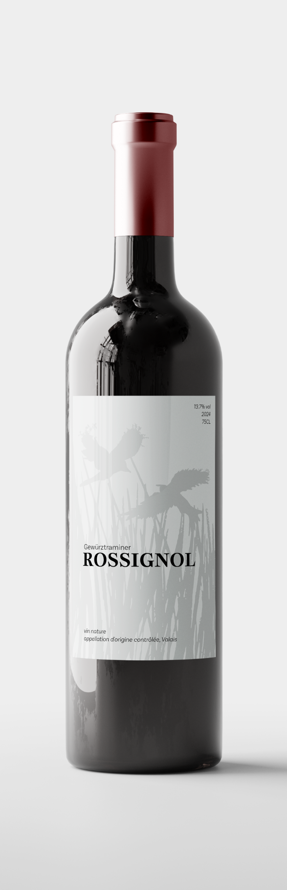

Vin blanc, Gewürztraminer
Millésime
2022
Premier millésime
2020
Provenance
Vallée du Rhône, Valais, Suisse
Vinification
Le Gewürztraminer est issu de vendanges manuelles et vinifié de manière artisanale. Après une courte macération pelliculaire, les raisins fermentent naturellement avec leurs levures indigènes. Le vin est ensuite élevé sur lies fines en cuve inox pendant 6 mois, pour préserver sa fraîcheur et son expression minérale.
Note de dégustation
D’une robe dorée aux reflets argentés, le Rossignol Blanc libère des arômes d’agrumes, de poire et de fleurs blanches. En bouche, il est vif et équilibré, offrant une belle minéralité et une finale légèrement saline.
Accords Mets et Vins
Parfait en accompagnement de poissons grillés, de fruits de mer, ou de plats de légumes frais, comme une salade de chèvre ou un risotto aux asperges.
Température de service
10-12°C
Potentiel de garde
3 à 5 ans